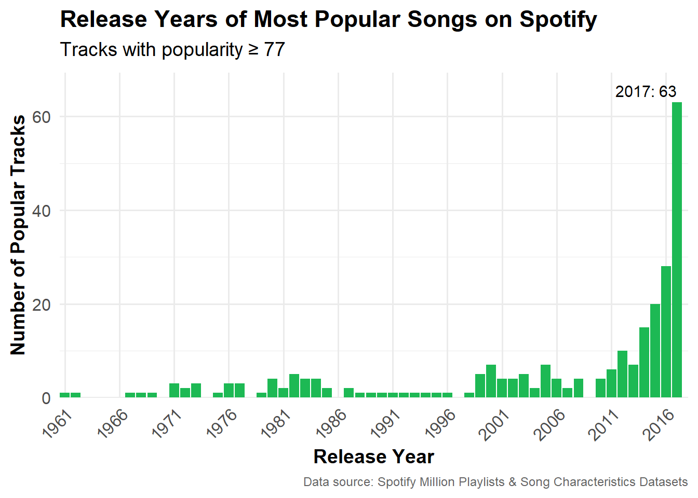

üéµ Hips Don‚Äôt Lie and We‚Äôre Dancing Like It‚Äôs 2005 üéµ
Hips don’t lie and neither do these bangers from The Ultimate 2000s Dance Party Playlist. This playlist is The Ultimate because it brings together party classics, pop anthems, and Latin beats designed to maximize danceability, energy, and pure fun. With a mix of superhit songs like “Hips Don’t Lie” and “Smack That”, and some less popular gems like “Virtual Diva” and “Ella”, this playlist will keep you moving and grooving from start to finish.
Design Principles
The playlist is based on Spotify’s Song Characteristics and Million Playlists datasets. I analyzed tracks across key metrics and followed these guiding principles:
Danceability: I prioritized tracks with high danceability scores.
Energy and Tempo: Songs were ordered using energy, tempo, and valence trends. I chose songs with high energy and tempos above 95 BPM to maintain a consistent momentum and upbeat vibe.
Theme: I focused on tracks released between 2000 and 2010 to capture the dance-pop and Latin-infused sounds of the era.
Popularity Mix: I tried to balance recognizable hits with lesser-known tracks to sustain interest.
Warning: spontaneous dancing is basically guaranteed.üíÉ
Appendix: Methodology
The following sections outline the steps used to create the “Ultimate Playlist.” Two data exports from Spotify were analyzed to identify the most popular songs and their characteristics.
Data Acquisition
Song Characteristics
Data about song characteristics was obtained from a mirror of the original Spotify data posted by GitHub user gabminamendez. The code below shows the process of downloading, importing, and cleaning this data.
Code
# load packageslibrary(tidyverse)library(knitr)library(kableExtra)library(lubridate)library(jsonlite)library(purrr) library(scales)# write load_songs function to get songs and their characteristicsload_songs <-function() {# set up the directory and file path dir_path <-"data/mp03" file_name <-"data.csv" file_path <-file.path(dir_path, file_name) file_url <-"https://raw.githubusercontent.com/gabminamedez/spotify-data/refs/heads/master/data.csv"# create directory if it doesn't existif (!dir.exists(dir_path)) {dir.create(dir_path, showWarnings=FALSE, recursive =TRUE) }# download the file if it doesn't already existif (!file.exists(file_path)) {download.file(file_url, destfile = file_path, method ="auto") }# read csv songs <-read_csv(file_path, show_col_types =FALSE)# instructor code for cleaning 'artists' column clean_artist_string <-function(x){ x |>str_replace_all("\\['", "") |>str_replace_all("'\\]", "") |>str_replace_all("[ ]?'", "") |>str_replace_all("[ ]*,[ ]*", ",") }# cleaned songs data: one row per artist-track long_songs <- songs |>separate_longer_delim(artists, ",") |>mutate(artist =clean_artist_string(artists)) |>select(-artists)# return data framereturn(long_songs) }# run functionlong_songs <-load_songs()# create a short version of cleaned songs data with one row per track# all artists combined into one string; create 'number of artists' columnshort_songs <- long_songs |>group_by(id) |>summarise(num_artists =n_distinct(artist),artist =paste(unique(artist), collapse =", "),across(-artist,first),.groups ="drop")
The Song Characteristics dataset contains 169,909 distinct tracks from various artists and genres, released between 1921 and 2020. The data includes information about each track’s name, artist(s), duration, release date, as well as features such as acousticness, danceability, energy, instrumentalness, liveness, loudness, speechiness, tempo, valence, mode, key, popularity, and whether a track is explicit. I added a ‘number of artists’ column to indicate how many artists created a particular song. The table below shows a sample of the song characteristics data.
Code
# provide glimpse and summary of the shorter songs data only in interactive rstudio sessionif (interactive()){glimpse(short_songs)summary(short_songs)}# show a sample of song characteristics datashort_songs |>slice_sample(n =5) |>kbl(caption ="Sample of Song Characteristics Data") |>kable_styling(bootstrap_options =c("striped", "hover")) |>scroll_box(width ="100%", height ="300px")
Sample of Song Characteristics Data
id
num_artists
artist
name
duration_ms
release_date
year
acousticness
danceability
energy
instrumentalness
liveness
loudness
speechiness
tempo
valence
mode
key
popularity
explicit
0oSCLH7cLuvCF4LXFRrWOs
1
Nick Cave & The Bad Seeds
Brother, My Cup Is Empty - 2010 Remastered Version
182493
1992
1992
0.0877
0.549
0.724
0.000
0.488
-6.810
0.0424
103.015
0.922
1
2
43
0
2zU14PbSlUxOfz2DWaeYHU
1
Fleetwood Mac
Go Your Own Way - Live 1977
294467
2/4/77
1977
0.0302
0.511
0.883
0.168
0.929
-8.010
0.0577
135.614
0.553
1
5
23
0
4owCqbb2fYTAYgtM6jjXIi
2
Dean Martin, Dick Stabile And His Orchestra
I'm Gonna Steal You Away - Remastered
152200
1957
1957
0.9450
0.726
0.142
0.000
0.166
-14.832
0.0488
100.465
0.668
0
7
12
0
07OgwcoS54OZgpUyehHhvM
2
Oscar Peterson Trio, Clark Terry
They Didn't Believe Me
258360
1/1/64
1964
0.9910
0.440
0.101
0.904
0.154
-14.873
0.0341
97.853
0.136
1
5
17
0
0spRhrdp5a0qHBzcYwtFIX
2
Hunter Hayes, Jason Mraz
Everybody's Got Somebody but Me (feat. Jason Mraz) - Encore
159347
2011
2011
0.3370
0.638
0.530
0.000
0.179
-6.928
0.0630
151.618
0.882
1
5
53
0
Playlists
The Spotify Million Playlists dataset contains a million playlists created by Spotify users. The data was obtained from GitHub user DevinOgrady’s respository, downloaded, and then concatenated into a list object.
Code
# write load_playlists function to get spotify million playlists datasetload_playlists <-function(){# set up directory and base url dir_path <-"data/mp03/playlists" base_url <-"https://raw.githubusercontent.com/DevinOgrady/spotify_million_playlist_dataset/main/data1/"# create directory if it doesn't existif (!dir.exists(dir_path)) {dir.create(dir_path, showWarnings=FALSE, recursive =TRUE) }# define slice range to get full dataset (each file has 1000 playlists) slices <-seq(0, 999000, by =1000)# create list to hold playlist data playlists <-list()# loop over each slice rangefor (start in slices) { end <- start +999 file_name <-sprintf("mpd.slice.%d-%d.json", start, end) file_url <-paste0(base_url, file_name) file_path <-file.path(dir_path, file_name)# download if file not already presentif (!file.exists(file_path)) {message("Downloading: ", file_name) success <-tryCatch({download.file(file_url, destfile = file_path, mode ="wb")TRUE }, error =function(e) {message("Download failed: ", file_name)FALSE })if (!success) next } else {message("File already exists: ", file_name) }# read json file into playlist list parsed <-tryCatch({ json_data <- jsonlite::fromJSON(file_path) playlists[[file_name]] <- json_data$playlistsTRUE }, error =function(e) {message("Failed to parse: ", file_name)FALSE })# skip here to log only successful parsesif (!parsed) next }# return combined list of playlistsreturn(playlists)}# load from rds if available; run and save if notif (file.exists("data/mp03/all_playlists.rds")) { playlists <-readRDS("data/mp03/all_playlists.rds")} else { playlists <-load_playlists()saveRDS(playlists, "data/mp03/all_playlists.rds")}
Rectangling the Playlist Data
The playlist data has to be processed into a ‘rectangular’ data format to make it usable for analysis. The code below shows the steps for transforming this hierarchical data into a tidy data frame where each row represents one track from a playlist.
The ‘tidy tracks’ dataset has 18,861,931 observations of 11 variables. These variables include playlist name, the number of followers a playlist has, artist name, track name, album name, and the duration of the track.
Code
# load playlists list from rds fileplaylists <-readRDS("data/mp03/all_playlists.rds")# instructor provided function to strip spotify type prefixstrip_spotify_prefix <-function(x){str_extract(x, ".*:.*:(.*)", group=1) }# check if tidy playlist data is already savedif (file.exists("data/mp03/tidy_tracks.rds")) {message("Reading tidy tracks from RDS...") tidy_tracks <-readRDS("data/mp03/tidy_tracks.rds")} else {message("Processing playlist data into tidy format...")# flatten playlists into tidy format with one track per rowtidy_tracks <- playlists |>bind_rows() |>mutate(playlist_name = name,playlist_id = pid,playlist_followers = num_followers) |>select(playlist_name, playlist_id, playlist_followers, tracks) |>unnest(tracks, keep_empty =TRUE) |>transmute( playlist_name, playlist_id,playlist_position = pos, playlist_followers,artist_name = artist_name,artist_id =strip_spotify_prefix(artist_uri),track_name = track_name,track_id =strip_spotify_prefix(track_uri),album_name = album_name,album_id =strip_spotify_prefix(album_uri),duration = duration_ms )# save tidy version to rds for future usesaveRDS(tidy_tracks, "data/mp03/tidy_tracks.rds")message("Tidy tracks saved to RDS.")}# glimpse of tidy tracks data within an interactive sessionif (interactive()){glimpse(tidy_tracks)}
Initial Data Exploration
As the tables below show, the ‘tidy tracks’ and the song characteristics data can now be used to provide various insights, such as:
There are 1,200,590 distinct tracks and 173,604 distinct artists in the playlists dataset!
The most popular track in the playlist data is “HUMBLE.” by Kendrick Lamar, appearing 13,314 times in playlists.
The most popular track in the playlist data that does not have a corresponding entry in the song characteristics data is “One Dance” by Drake.
The most “danceable” track is Funky Cold Medina, which has a danceability score of 0.988 and appears in 209 playlists.
The playlist with the longest average track length is called “Mixes” and has an average track length of 64.5 minutes.
The most popular playlist on Spotify is called “Breaking Bad” and has 53,519 followers.
Code
# number of distinct tracks and artists in playlists datadistinct_counts <- tidy_tracks |>summarise(distinct_tracks =n_distinct(track_id),distinct_artists =n_distinct(artist_id)) |>mutate(distinct_tracks =comma(distinct_tracks),distinct_artists =comma(distinct_artists)) |>rename(`Distinct Tracks`= distinct_tracks,`Distinct Artists`= distinct_artists )# display resultskbl(distinct_counts, caption ="<b>Number of Distinct Tracks and Artists<b>") |>kable_styling(bootstrap_options =c("striped", "hover", "condensed"))
Number of Distinct Tracks and Artists
Distinct Tracks
Distinct Artists
1,200,590
173,604
Code
# 5 most popular tracks in playlist datamost_popular <- tidy_tracks |>count(track_id, track_name, artist_name, sort =TRUE) |>slice_head(n =5) |>mutate(n =comma(n)) |>rename(`Playlist Appearances`= n)# display resultsmost_popular |>select(-track_id) |>rename(`Track Name`= track_name,`Artist Name`= artist_name) |>kbl(caption ="<b>Top 5 Most Popular Tracks in the Playlist Data<b>")|>kable_styling(bootstrap_options =c("striped", "hover", "condensed"))
Top 5 Most Popular Tracks in the Playlist Data
Track Name
Artist Name
Playlist Appearances
HUMBLE.
Kendrick Lamar
13,314
One Dance
Drake
12,179
Broccoli (feat. Lil Yachty)
DRAM
11,845
Closer
The Chainsmokers
11,656
Congratulations
Post Malone
11,310
Code
# most popular track in playlist data but missing from songs datamissing_track <- tidy_tracks |>anti_join(short_songs, by=c('track_id'='id')) |>count(track_id, track_name, artist_name, sort =TRUE) |>slice_head(n =1) |>mutate(`Playlist Appearances`=comma(n)) |>select(`Track Name`= track_name,`Artist Name`= artist_name,`Playlist Appearances`)# display resultskbl(missing_track, caption ="<b>Most Popular Track Missing from Song Characteristics Data<b>")|>kable_styling(bootstrap_options =c("striped", "hover", "condensed"))
Most Popular Track Missing from Song Characteristics Data
Track Name
Artist Name
Playlist Appearances
One Dance
Drake
12,179
Code
# identify most danceable songmost_danceable <- short_songs |>slice_max(danceability, n =1)# count appearance in playlistsplaylist_count <- tidy_tracks |>filter(track_id %in% most_danceable$id) |>distinct(playlist_id) |>count()# total number of unique playliststotal_playlists <- tidy_tracks |>distinct(playlist_id) |>nrow()# combine to display resultmost_danceable_summary <- most_danceable |>select(`Track Name`= name,`Artist`= artist,`Danceability`= danceability) |>mutate(`Playlist Appearances`=comma(playlist_count$n),`Percent of Playlists`=percent(playlist_count$n / total_playlists, accuracy =0.01))# display resultkbl(most_danceable_summary, caption ="<b>Most Danceable Song and Its Playlist Appearances<b>") |>kable_styling(bootstrap_options =c("striped", "hover", "condensed"))
# most popular playlistmost_popular_playlist <- tidy_tracks |>distinct(playlist_id, playlist_name, playlist_followers) |>slice_max(playlist_followers, n =1) |>mutate(`Followers`=comma(playlist_followers)) |>select(`Playlist ID`= playlist_id,`Playlist Name`= playlist_name,`Followers`)# display resultskbl(most_popular_playlist, caption ="<b>Most Popular Playlist on Spotify<b>") |>kable_styling(bootstrap_options =c("striped", "hover", "condensed"))
Most Popular Playlist on Spotify
Playlist ID
Playlist Name
Followers
746359
Breaking Bad
53,519
Identifying Characteristics of Popular Songs
The ‘tidy tracks’ and ‘song characteristics’ data are joined to create a combined dataset called ‘tidy songs’ to explore the common features of popular songs. The ‘tidy songs’ data has 7,962,190 observations of 30 variables.
Popularity Score Vs. Number of Playlist Appearances
The figures below show that there is a moderate positive correlation (r = 0.42) between a track’s popularity score and the number of times it appears in user-generated playlists. While tracks that are included in more playlists tend to have higher popularity scores, the variation in the data indicates that playlist appearances do not fully determine track popularity.
Code
# playlist appearancesplaylist_appearances <- tidy_songs |>distinct(track_id, playlist_id) |>count(track_id, name ="playlist_appearances")# track popularitypopularity <- tidy_songs |>select(track_id, track_name, popularity) |>distinct()# combine playlist appearances and popularity pop_summary <-left_join(playlist_appearances, popularity, by ="track_id") # correlationcorr <-cor(pop_summary$playlist_appearances, pop_summary$popularity, use ="complete.obs")# display correlationtibble::tibble(Metric ="Playlist Appearances vs. Popularity",Correlation =round(corr, 3)) |>kbl(caption ="<b>Correlation Between Playlist Appearances and Popularity<b>")|>kable_styling(bootstrap_options =c("striped", "hover", "condensed"))
Correlation Between Playlist Appearances and Popularity
Metric
Correlation
Playlist Appearances vs. Popularity
0.422
Code
# plot popularity vs playlist appearancesggplot(pop_summary, aes(x = playlist_appearances, y = popularity)) +geom_point(alpha =0.2, size =1.5, color ="#0073C2FF") +geom_smooth(method ="lm", se =TRUE, color ="darkred", linewidth =1, linetype="dashed") +scale_x_log10(labels = scales::comma) +coord_cartesian(ylim =c(0, 100)) +labs(title ="Playlist Appearances Vs. Track Popularity",subtitle =paste0("Correlation Coefficient: ", round(corr, 2)),x ="Playlist Appearances (log scale)",y ="Track Popularity Score (0–100)",caption ="Data source: Spotify Million Playlists & Song Characteristics Datasets") +theme_minimal(base_size =14) +theme(plot.title =element_text(face ="bold"),plot.subtitle =element_text(margin =margin(b =10)),plot.caption =element_text(size =9, color ="gray40"),axis.text =element_text(size =12),axis.title =element_text(size=14, face ="bold") )
To identify the common features of popular songs, I created a subset of the combined ‘tidy songs’ data filtered by popularity scores. The threshold for determining whether a song is popular or not-quite popular is somewhat arbitrary. For all subsequent analyses, I am using the 90th percentile popularity score as the threshold. In other words, ‘popular songs’ are defined as those in the top 10% of popularity. For this data, these are all songs with popularity scores of 77 or above. The ‘popular songs’ subset has 839,145 distinct tracks.
Code
# set popularity threshold: 90th percentile popularity scorepopularity_threshold <-quantile(tidy_songs$popularity, 0.90, na.rm =TRUE)# create popular songs data subsetpopular_songs <- tidy_songs |>filter(popularity >= popularity_threshold)
When Were the Most Popular Songs Released?
This figure shows the number of popular songs (as defined by a popularity score of 77 or above) released each year. There is a noticeable upward trend after 2010, peaking in 2017 with 63 popular songs.
The upward trend since 2010 can partly be explained by the growth of Spotify’s platform during this period. The song popularity scores mirror the increase in Spotify’s streaming catalog and user base over the years. Users also tend to listen to and rate recently released songs more than earlier ones, creating a recency bias which can skew the results and explain the long tail of the distribution.
Code
# popular songs by yearpopular_songs_yr <- popular_songs |>distinct(track_id, .keep_all =TRUE) |>count(year, sort =TRUE)# year with most popular songstop_year <- popular_songs_yr |>slice_max(n, n =1)# plot of popular songs by release yearggplot(popular_songs_yr, aes(x = year, y = n)) +geom_col(fill ="#1DB954") +geom_text(data = top_year,aes(label =paste0(year, ": ", n)),vjust =-0.5,hjust =1,color ="black",size =4) +scale_x_continuous(breaks =seq(min(popular_songs_yr$year), max(popular_songs_yr$year), by =5),minor_breaks =NULL,expand =expansion(mult =c(0, 0.01))) +scale_y_continuous(labels = scales::comma,expand =expansion(mult =c(0, 0.1))) +labs(title ="Release Years of Most Popular Songs on Spotify",subtitle =paste0("Tracks with popularity ≥ ", round(popularity_threshold, 1)),x ="Release Year",y ="Number of Popular Tracks",caption ="Data source: Spotify Million Playlists & Song Characteristics Datasets") +theme_minimal(base_size =14) +theme(plot.title =element_text(face ="bold"),plot.subtitle =element_text(margin =margin(b =10)),plot.caption =element_text(size =9, color ="gray40"),axis.text =element_text(size =12),axis.title =element_text(size=14, face ="bold"),axis.text.x =element_text(angle =45, hjust =1))

When Did Danceability Peak?
This graph looks at the average “danceability” score of popular songs released each year. The danceability peaked in 1982, with a score of 0.77 (on a scale of 0 to 1). The data also shows a second peak in 1996.
Code
# average danceability by yeardance_by_year <- popular_songs |>group_by(year) |>summarise(avg_danceability =mean(danceability), .groups ="drop")# peak yearpeak_year <- dance_by_year |>filter(avg_danceability ==max(avg_danceability))# plot danceability over yearsggplot(dance_by_year, aes(x = year, y = avg_danceability)) +geom_line(color ="turquoise", linewidth =1.2) +geom_point(data = peak_year, aes(x = year, y = avg_danceability), color ="maroon", size =3) +geom_text(data = peak_year, aes(x = year, y = avg_danceability, label =paste0("Peak: ", year, "\nScore: ", round(avg_danceability, 2))), vjust =-1.2, fontface ="bold", color ="maroon") +scale_y_continuous(limits =c(0, 1), expand =expansion(mult =c(0, 0.06))) +scale_x_continuous(breaks =seq(min(dance_by_year$year), max(dance_by_year$year), by =2)) +labs(title ="Average Danceability by Release Year",subtitle =paste("Danceability peaked in", peak_year$year),x ="Release Year",y ="Average Danceability (0-1)",caption ="Data source: Spotify Million Playlists & Song Characteristics Datasets") +theme_minimal(base_size =14) +theme(plot.title =element_text(face ="bold"),plot.subtitle =element_text(margin =margin(b =10)),plot.caption =element_text(size =9, color ="gray40"),axis.text =element_text(size =12),axis.title =element_text(size=14, face ="bold"),axis.text.x =element_text(angle =45, hjust =1))
Decade Most Represented in User Playlists
Grouping the number of popular songs (popularity ≥ 77) in user-generated playlists by decade of release shows that the 2010s dominate user playlists with over half a million tracks. This mirrors the upward trend in the number of popular songs released each year. Both trends reflect the growth of Spotify over time and a recency bias in users’ behavior.
Code
# number of popular songs by decadedecade <- popular_songs |>mutate(decade = (year %/%10) *10) |>count(decade, sort =TRUE) # most represented decademost_represented_decade <- decade |>slice_max(n, n =1)# plotggplot(decade, aes(x =factor(decade), y = n)) +geom_col(fill ="steelblue") +geom_text(aes(label =comma(n)), vjust =-0.5, size =4) +scale_y_continuous(labels =label_number(scale_cut = scales::cut_short_scale()),expand =expansion(mult =c(0, 0.15))) +labs(title ="Number of Songs in User Playlists by Decade",subtitle =paste("Most represented decade:", most_represented_decade$decade),x ="Decade",y ="Number of Tracks",caption ="Data source: Spotify Million Playlists & Song Characteristics Datasets") +theme_minimal(base_size =14) +theme(plot.title =element_text(face ="bold"),plot.subtitle =element_text(margin =margin(b =10)),plot.caption =element_text(size =9, color ="gray40"),axis.text =element_text(size =12),axis.title =element_text(size=14, face ="bold"))
Musical Key Frequency Among Popular Songs
The most common musical key among popular songs (popularity ≥ 77) in user playlists is C♯/D♭, which is surprising considering its difficulty. Musicians generally prefer simpler keys like C, D, and G that are playable on both keyboard and guitar. Due to the way keys are arranged, C♯/D♭ does not play naturally or easily on any instrument.
The results are likely due to several factors:
Sample size and data bias: in addition to the original Spotify data exports not being comprehensive or representative, the ‘popular songs’ subset used here can be skewed if a few very popular tracks are in C♯/D♭.
There could be key detection errors in Spotify’s algorithms.
The data is heavily skewed towards more recent years, and modern popular music is highly auto-tuned and processed. Vocals and instruments are often shifted sharper to sound more bright or sleek for radio and streaming.
In this sense, the key frequency results could actually be pointing towards the dominance of autotuning and post production processing in modern popular music.
Code
# number of songs by keykey_counts <- popular_songs |>count(key, sort =FALSE)# convert key numbers to labelskey_notes <-c("C", "C#/Db", "D", "D#/Eb", "E", "F", "F#/Gb", "G", "G#/Ab", "A", "A#/Bb", "B")key_counts <- key_counts |>mutate(key_label =factor(key_notes[key +1], levels = key_notes))# plotggplot(key_counts, aes(x = key_label, y = n, fill = n)) +geom_col(show.legend =FALSE) +coord_polar() +scale_fill_gradientn(colors =c("#b9fbc0", "#34c759", "#0a7d44")) +expand_limits(y =max(key_counts$n) *1.1) +labs(title ="Distribution of Musical Keys in Popular Songs",subtitle =paste0("Tracks with Popularity ≥ ", popularity_threshold),caption ="Data source: Spotify Million Playlists & Song Characteristics Datasets",x =NULL,y =NULL) +theme_minimal(base_size =14) +theme(axis.text.y =element_blank(),axis.text.x =element_text(size =9, face ="bold"),panel.grid.major =element_blank(),panel.grid.minor =element_blank(),plot.title =element_text(face ="bold", size =14),plot.subtitle =element_text(size =12, margin =margin(b =10)),plot.caption =element_text(size =9, color ="gray40"),plot.margin =margin(10, 10, 10, 10))
Most Popular Track Lengths In User Playlists
The plot below shows the most popular track lengths in user playlists. The majority of tracks are between 3 and 4.5 minutes long, and the median track length is 3.74 minutes. Tracks shorter than 2.5 minutes and longer than 5.5 minutes are relatively rare.
Code
# convert track duration to minutestrack_lengths <- popular_songs |>mutate(duration_min = duration /60000) # median track lengthmedian_length <-median(track_lengths$duration_min, na.rm =TRUE)# plotggplot(track_lengths, aes(x = duration_min)) +geom_histogram(binwidth =0.5, fill ="#1DB954", color ="white", boundary =0) +geom_vline(xintercept = median_length, color ="blue", linetype ="dashed", linewidth =1) +annotate("text",x = median_length +0.2,y =300000,label =paste0("Median: ", round(median_length, 2), " min"),hjust =0, vjust =-0.5,color ="blue", size =4.5) +scale_x_continuous(breaks =seq(0, 10, by =0.5)) +scale_y_continuous(labels = comma, expand =expansion(mult =c(0, 0.07))) +labs(title ="Distribution of Track Lengths in User Playlists",#subtitle = "Dashed line shows median track length",x ="Track Length (minutes)",y ="Number of Tracks",caption ="Data source: Spotify Million Playlists & Song Characteristics Datasets") +theme_minimal(base_size =14) +theme(plot.title =element_text(face ="bold", size =14),plot.subtitle =element_text(margin =margin(b =10)),plot.caption =element_text(size =9, color ="gray40"),axis.text =element_text(size =12),axis.title =element_text(size=14, face ="bold"))
Danceability Vs. Popularity Score of Popular Songs
This scatterplot shows a slight positive relationship between the danceability score of a song (on a scale of 0-1 ) and the popularity score of songs (popularity ≥ 77). The correlation coefficient is 0.22, indicating that songs with high danceability are marginally more popular, but the relationship is not strong. Of course, this subset only contains songs in the top 10% of popularity, so there is less variation in the data to explain.
Code
# correlation between danceability and popularity among popular songscor1 <-cor(popular_songs$danceability, popular_songs$popularity)# plotggplot(popular_songs, aes(x = danceability, y = popularity)) +geom_point(alpha =0.2, size =1.5, color ="#0099a8") +geom_smooth(method ="lm", se =TRUE, color ="maroon", linewidth =1, linetype ="dashed") +labs(title ="Danceability Vs. Popularity Score of Popular Songs",subtitle =paste0("Correlation Coefficient: ", round(cor1, 2)),x ="Danceability (0-1)",y ="Popularity (77-100)",caption ="Data source: Spotify Million Playlists & Song Characteristics Datasets") +theme_minimal(base_size =14) +theme(plot.title =element_text(face ="bold"),plot.subtitle =element_text(margin =margin(b =10)),plot.caption =element_text(size =9, color ="gray40"),axis.text =element_text(size =12),axis.title =element_text(size=14, face ="bold"))
Relationship Between Number of Artists and Popularity
Do songs with more artist collaborations tend to be more popular? Or do solo tracks dominate popularity? This graph shows the distribution of popularity scores by number of artists in the ‘popular songs’ data (popularity ≥ 77). Tracks with 1 or 2 artists are the most common and have slightly higher median popularity compared to tracks with more artists.
Code
# mutate num_artists variablepopular_songs <- popular_songs |>mutate(num_artists_grouped =ifelse(num_artists >=5, "5+", as.character(num_artists)))# boxplot of popularity score by number of artistsggplot(popular_songs, aes(x =factor(num_artists_grouped), y = popularity)) +geom_boxplot(fill ="coral", outlier.color ="gray40", outlier.size =1) +coord_cartesian(ylim =c(70, 100)) +labs(title ="Track Popularity by Number of Artists",x ="Number of Artists",y ="Popularity Score",caption ="Data source: Spotify Million Playlists & Song Characteristics Datasets") +theme_minimal(base_size =14) +theme(plot.title =element_text(face ="bold"),plot.subtitle =element_text(margin =margin(b =10)),plot.caption =element_text(size =9, color ="gray40"),axis.text =element_text(size =12),axis.text.x =element_text(angle =45, hjust =1),axis.title =element_text(size=14, face ="bold"))
Building a Playlist From Anchor Songs
To build our playlist, we pick an “anchor song” and then find songs that fit well with this song using various heuristics, or ‘rules of thumb’. The Spotify data used here does not include song genre, theme, or any artist information besides their name, so the rules of thumb will have to focus on songs co-occurring on the same playlists, released within the same time period, and having similar metrics such as key, tempo, danceability, etc.
The specific heuristics used in this analysis are:
Playlist co-occurrence: songs that commonly appear on the same playlists as the anchor song.
Musical Similarity: songs that are in the same key and have a similar tempo.
Same Artist: songs released by the same artist.
Same Release Year and Characteristics: songs released in the same year and with similar levels of danceability, acousticness, etc.
Same Release Decade, Danceability, and Energy: songs released within the same decade and with similar levels of danceability and energy.
The code below uses ‘Toxic’ by Britney Spears as the anchor song. I implemented the five heurestics mentioned above to identify related songs. As ‘Toxic’ is a very popular song, I only counted songs that co-occurred at least 10 times on the same playlists. The results from all heuristics were combined into an initial candidate list. This initial candidate list was too broad, so it was filtered again by decade and by key metrics such as danceability, energy, popularity, and tempo. The resulting shorter candidate list was then scored, ranked, and randomly sampled to get the final playlist candidate list of 30 tracks.
Code
# set anchor song: 'Toxic' by Britney Spearsanchor_id <-"6I9VzXrHxO9rA9A5euc8Ak"anchor_song <- tidy_songs |>filter(track_id == anchor_id)# playlists containing the anchor songanchor_playlists <- tidy_songs |>filter(track_id == anchor_id) |>distinct(playlist_id)# other songs from the same playlists (filtered to those appearing at least thrice)common_songs <- tidy_songs |>filter(playlist_id %in% anchor_playlists$playlist_id, track_id != anchor_id) |>count(track_id, sort =TRUE) |>filter(n >=10) |># <--- ADD THIS LINE HEREleft_join( tidy_songs |>select(track_id, track_name, artist_name, popularity, year, danceability, tempo, key, mode, energy, acousticness, valence),by ="track_id" ) |>distinct(track_id, .keep_all =TRUE)# songs with same key and similar tempo (+/-5bpm)same_key_tempo <- tidy_songs |>filter( key == anchor_song$key,abs(tempo - anchor_song$tempo) <=10, track_id != anchor_id) |>distinct(track_id, .keep_all =TRUE) |>select(track_id, track_name, artist_name, popularity, year, danceability, tempo, key, mode, energy, acousticness, valence)# songs from the same artistsame_artist_songs <- tidy_songs |>filter(artist_name %in% anchor_song$artist_name, track_id != anchor_id)|>distinct(track_id, .keep_all =TRUE) |>select(track_id, track_name, artist_name, popularity, year, danceability, tempo, key, mode, energy, acousticness, valence)# songs released in same year with similar danceability, energy, acousticness, valencesimilar_features <- tidy_songs |>filter( year == anchor_song$year[1], abs(danceability - anchor_song$danceability[1]) <0.1,abs(energy - anchor_song$energy[1]) <0.1,abs(acousticness - anchor_song$acousticness[1]) <0.1,abs(valence - anchor_song$valence[1]) <0.1, track_id != anchor_id)|>distinct(track_id, .keep_all =TRUE) |>select(track_id, track_name, artist_name, popularity, year, danceability, tempo, key, mode, energy, acousticness, valence)# songs released in same decade with similar energy and danceability# get anchor decadeanchor_decade <- (anchor_song$year %/%10) *10# find songs with same vibesvibe_matches <- tidy_songs |>filter( (year %/%10) *10== anchor_decade,abs(danceability - anchor_song$danceability[1]) <0.1,abs(energy - anchor_song$energy[1]) <0.1, track_id != anchor_id)|>distinct(track_id, .keep_all =TRUE) |>select(track_id, track_name, artist_name, popularity, year, danceability, tempo, key, mode, energy, acousticness, valence)# combine all 5 heuristics and filter by same decade to get initial list of candidatesinitial_candidates <-bind_rows( common_songs, same_key_tempo, same_artist_songs, similar_features, vibe_matches) |>distinct(track_id, .keep_all =TRUE) # filter initial candidates liststrong_candidates <- initial_candidates |>filter( (year %/%10) *10== anchor_decade, danceability >=0.6, energy >=0.5, tempo >=95, popularity >=50, acousticness <0.5) # score candidatestop_scored_candidates <- strong_candidates |>mutate(score = danceability *0.4+ energy *0.3+ popularity/100*0.3 ) |>arrange(desc(score)) |>slice_head(n =100)# randomly sample 30 tracks from top 100set.seed(123)sampled_candidates <- top_scored_candidates |>slice_sample(n =30)
The Ultimate 2000s Dance Party Playlist
The table below shows the final playlist, curated to embrace the 2000s dance party vibes. It starts out strong with huge hits from Shakira, Nina Sky, and Britney, the Queens of 2000s dance floors. It ramps up and builds energy and intensity with tracks from Flo Rida, T.I., LMFAO. Then, it mellows just slightly before ending strong with “Overnight Party” and “Smack That.”
Code
# selected tracksselected_tracks <-c("Hips Don't Lie","Move Ya Body","She Wolf","I'm a Slave 4 U","Low (feat T-Pain) - Feat T-Pain Album Version","Bring Em Out","Shots","Ella","Wipe Me Down (feat. Foxx, Webbie & Lil Boosie) - Remix","Still Tippin' (feat. Slim Thug and Paul Wall) - featuring Slim Thug and Paul Wall","Overnight Celebrity","Smack That - Dirty")# filter sampled candidates to only include selected tracksfinal_playlist <- sampled_candidates |>filter(track_name %in% selected_tracks) |>mutate(order =match(track_name, selected_tracks)) |>arrange(order) |>select(order, track_name, artist_name, popularity, year, danceability, tempo, energy, valence)# display playlist in spotify green final_playlist |>kable("html", escape =FALSE, align ="c", col.names =c("Order", "Track Name", "Artist", "Popularity", "Year", "Danceability", "Tempo (BPM)", "Energy", "Valence" )) |>kable_styling(bootstrap_options =c("striped", "hover", "condensed", "responsive"), full_width =FALSE, position ="center",font_size =14) |>row_spec(0, bold =TRUE, color ="white", background ="#4CAF50") |>column_spec(1, bold =TRUE) |>column_spec(2:9, width ="10em")
Order
Track Name
Artist
Popularity
Year
Danceability
Tempo (BPM)
Energy
Valence
4
I'm a Slave 4 U
Britney Spears
66
2001
0.847
110.027
0.843
0.963
6
Bring Em Out
T.I.
63
2004
0.759
98.579
0.891
0.587
7
Shots
LMFAO
67
2009
0.825
128.016
0.856
0.207
8
Ella
Bebe
61
2004
0.843
118.006
0.797
0.866
9
Wipe Me Down (feat. Foxx, Webbie & Lil Boosie) - Remix
Boosie Badazz
60
2007
0.836
165.091
0.906
0.718
12
Smack That - Dirty
Akon
70
2006
0.939
118.978
0.742
0.924
This playlist was optimized for dancing. The danceability starts and stays fairly high throughout, around 0.8-0.9 (on a scale of 0-1), and ends at its peak. The energy and tempo are also high, with some dips around track 4-6, before picking back up after track 7. The tempo peaks at track 9 before slowly winding down. The valence, or emotion/mood, starts high, dips sharply around tracks 5-6 before rising again, creating some emotional contrast and a feel-good closure.
Code
final_playlist_long <- final_playlist |>pivot_longer(cols =c(danceability, energy, tempo, valence),names_to ="Feature", values_to ="Value")ggplot(final_playlist_long, aes(x = order, y = Value, color = Feature)) +geom_line(size =1.2) +geom_point(size =2) +facet_wrap(~ Feature, scales ="free_y") +theme_minimal() +labs(title ="Playlist Progression Across Features", x ="Track Order", y ="Value",caption ="Data source: Spotify Million Playlists & Song Characteristics Datasets") +theme_minimal(base_size =14) +theme(plot.title =element_text(face ="bold", size=14),plot.subtitle =element_text(margin =margin(b =10)),plot.caption =element_text(size =9, color ="gray40"),axis.text =element_text(size =10),axis.title =element_text(size=12, face ="bold"))
Warning: Using `size` aesthetic for lines was deprecated in ggplot2 3.4.0.
ℹ Please use `linewidth` instead.
Source Code
---title: "The Ultimate 2000's Dance Party Playlist"author: Vibha Gokhaleformat: html: code-tools: true code-fold: true toc: true toc-location: left number-sections: false toc-depth: 2execute: eval: true messages: false warnings: false---## üéµ Hips Don't Lie and We're Dancing Like It's 2005 üéµHips don't lie and neither do these bangers from **The Ultimate 2000s Dance Party Playlist**. This playlist is **The Ultimate** because it brings together party classics, pop anthems, and Latin beats designed to maximize danceability, energy, and pure fun. With a mix of superhit songs like "Hips Don't Lie" and "Smack That", and some less popular gems like "Virtual Diva" and "Ella", this playlist will keep you moving and grooving from start to finish.### Design PrinciplesThe playlist is based on Spotify's Song Characteristics and Million Playlists datasets. I analyzed tracks across key metrics and followed these guiding principles:* **Danceability**: I prioritized tracks with high danceability scores. * **Energy and Tempo**: Songs were ordered using energy, tempo, and valence trends. I chose songs with high energy and tempos above 95 BPM to maintain a consistent momentum and upbeat vibe.* **Theme**: I focused on tracks released between 2000 and 2010 to capture the dance-pop and Latin-infused sounds of the era.* **Popularity Mix**: I tried to balance recognizable hits with lesser-known tracks to sustain interest.#### Warning: spontaneous dancing is basically guaranteed.üíÉ::: {.video}<iframe width="560" height="315" src="https://www.youtube.com/embed/DUT5rEU6pqM" title="Hips Don't Lie - Shakira" frameborder="0" allow="accelerometer; autoplay; clipboard-write; encrypted-media; gyroscope; picture-in-picture" allowfullscreen></iframe>:::## Appendix: MethodologyThe following sections outline the steps used to create the "Ultimate Playlist." Two data exports from Spotify were analyzed to identify the most popular songs and their characteristics. ### Data Acquisition#### Song CharacteristicsData about song characteristics was obtained from a mirror of the original Spotify data posted by GitHub user [**gabminamendez**](https://raw.githubusercontent.com/gabminamedez/spotify-data/refs/heads/master/data.csv). The code below shows the process of downloading, importing, and cleaning this data. ```{r load_songs, message=FALSE, warning=FALSE}# load packageslibrary(tidyverse)library(knitr)library(kableExtra)library(lubridate)library(jsonlite)library(purrr) library(scales)# write load_songs function to get songs and their characteristicsload_songs <- function() { # set up the directory and file path dir_path <- "data/mp03" file_name <- "data.csv" file_path <- file.path(dir_path, file_name) file_url <- "https://raw.githubusercontent.com/gabminamedez/spotify-data/refs/heads/master/data.csv" # create directory if it doesn't exist if (!dir.exists(dir_path)) { dir.create(dir_path, showWarnings=FALSE, recursive = TRUE) } # download the file if it doesn't already exist if (!file.exists(file_path)) { download.file(file_url, destfile = file_path, method = "auto") } # read csv songs <- read_csv(file_path, show_col_types = FALSE) # instructor code for cleaning 'artists' column clean_artist_string <- function(x){ x |> str_replace_all("\\['", "") |> str_replace_all("'\\]", "") |> str_replace_all("[ ]?'", "") |> str_replace_all("[ ]*,[ ]*", ",") } # cleaned songs data: one row per artist-track long_songs <- songs |> separate_longer_delim(artists, ",") |> mutate(artist = clean_artist_string(artists)) |> select(-artists) # return data frame return(long_songs) }# run functionlong_songs <- load_songs()# create a short version of cleaned songs data with one row per track# all artists combined into one string; create 'number of artists' columnshort_songs <- long_songs |> group_by(id) |> summarise( num_artists = n_distinct(artist), artist = paste(unique(artist), collapse = ", "), across(-artist,first), .groups = "drop")```The *Song Characteristics* dataset contains 169,909 distinct tracks from various artists and genres, released between 1921 and 2020. The data includes information about each track's name, artist(s), duration, release date, as well as features such as acousticness, danceability, energy, instrumentalness, liveness, loudness, speechiness, tempo, valence, mode, key, popularity, and whether a track is explicit. I added a 'number of artists' column to indicate how many artists created a particular song. The table below shows a sample of the song characteristics data.```{r sample_songs_data}# provide glimpse and summary of the shorter songs data only in interactive rstudio sessionif (interactive()){ glimpse(short_songs) summary(short_songs)}# show a sample of song characteristics datashort_songs |> slice_sample(n = 5) |> kbl(caption = "Sample of Song Characteristics Data") |> kable_styling(bootstrap_options = c("striped", "hover")) |> scroll_box(width = "100%", height = "300px")```#### PlaylistsThe *Spotify Million Playlists* dataset contains a million playlists created by Spotify users. The data was obtained from GitHub user **DevinOgrady**'s [respository](https://github.com/DevinOgrady/spotify_million_playlist_dataset/tree/main), downloaded, and then concatenated into a list object. ```{r load_playlists}# write load_playlists function to get spotify million playlists datasetload_playlists <- function(){ # set up directory and base url dir_path <- "data/mp03/playlists" base_url <- "https://raw.githubusercontent.com/DevinOgrady/spotify_million_playlist_dataset/main/data1/" # create directory if it doesn't exist if (!dir.exists(dir_path)) { dir.create(dir_path, showWarnings=FALSE, recursive = TRUE) } # define slice range to get full dataset (each file has 1000 playlists) slices <- seq(0, 999000, by = 1000) # create list to hold playlist data playlists <- list() # loop over each slice range for (start in slices) { end <- start + 999 file_name <- sprintf("mpd.slice.%d-%d.json", start, end) file_url <- paste0(base_url, file_name) file_path <- file.path(dir_path, file_name) # download if file not already present if (!file.exists(file_path)) { message("Downloading: ", file_name) success <- tryCatch({ download.file(file_url, destfile = file_path, mode = "wb") TRUE }, error = function(e) { message("Download failed: ", file_name) FALSE }) if (!success) next } else { message("File already exists: ", file_name) } # read json file into playlist list parsed <- tryCatch({ json_data <- jsonlite::fromJSON(file_path) playlists[[file_name]] <- json_data$playlists TRUE }, error = function(e) { message("Failed to parse: ", file_name) FALSE }) # skip here to log only successful parses if (!parsed) next } # return combined list of playlists return(playlists)}# load from rds if available; run and save if notif (file.exists("data/mp03/all_playlists.rds")) { playlists <- readRDS("data/mp03/all_playlists.rds")} else { playlists <- load_playlists() saveRDS(playlists, "data/mp03/all_playlists.rds")}```#### Rectangling the Playlist Data The playlist data has to be processed into a 'rectangular' data format to make it usable for analysis. The code below shows the steps for transforming this hierarchical data into a tidy data frame where each row represents one track from a playlist. The 'tidy tracks' dataset has 18,861,931 observations of 11 variables. These variables include playlist name, the number of followers a playlist has, artist name, track name, album name, and the duration of the track.```{r tidy_tracks, message=FALSE}# load playlists list from rds fileplaylists <- readRDS("data/mp03/all_playlists.rds")# instructor provided function to strip spotify type prefixstrip_spotify_prefix <- function(x){ str_extract(x, ".*:.*:(.*)", group=1) }# check if tidy playlist data is already savedif (file.exists("data/mp03/tidy_tracks.rds")) { message("Reading tidy tracks from RDS...") tidy_tracks <- readRDS("data/mp03/tidy_tracks.rds")} else { message("Processing playlist data into tidy format...")# flatten playlists into tidy format with one track per rowtidy_tracks <- playlists |> bind_rows() |> mutate( playlist_name = name, playlist_id = pid, playlist_followers = num_followers) |> select(playlist_name, playlist_id, playlist_followers, tracks) |> unnest(tracks, keep_empty = TRUE) |> transmute( playlist_name, playlist_id, playlist_position = pos, playlist_followers, artist_name = artist_name, artist_id = strip_spotify_prefix(artist_uri), track_name = track_name, track_id = strip_spotify_prefix(track_uri), album_name = album_name, album_id = strip_spotify_prefix(album_uri), duration = duration_ms )# save tidy version to rds for future usesaveRDS(tidy_tracks, "data/mp03/tidy_tracks.rds") message("Tidy tracks saved to RDS.")}# glimpse of tidy tracks data within an interactive sessionif (interactive()){ glimpse(tidy_tracks)}```### Initial Data ExplorationAs the tables below show, the 'tidy tracks' and the song characteristics data can now be used to provide various insights, such as:* There are 1,200,590 distinct tracks and 173,604 distinct artists in the playlists dataset!* The most popular track in the playlist data is "HUMBLE." by Kendrick Lamar, appearing 13,314 times in playlists.* The most popular track in the playlist data that does not have a corresponding entry in the song characteristics data is "One Dance" by Drake.* The most "danceable" track is *Funky Cold Medina*, which has a danceability score of 0.988 and appears in 209 playlists.* The playlist with the longest average track length is called "Mixes" and has an average track length of 64.5 minutes.* The most popular playlist on Spotify is called "Breaking Bad" and has 53,519 followers.```{r distinct_counts}# number of distinct tracks and artists in playlists datadistinct_counts <- tidy_tracks |> summarise( distinct_tracks = n_distinct(track_id), distinct_artists = n_distinct(artist_id)) |> mutate( distinct_tracks = comma(distinct_tracks), distinct_artists = comma(distinct_artists)) |> rename( `Distinct Tracks` = distinct_tracks, `Distinct Artists` = distinct_artists )# display resultskbl(distinct_counts, caption = "<b>Number of Distinct Tracks and Artists<b>") |> kable_styling(bootstrap_options = c("striped", "hover", "condensed")) ``````{r popular_tracks}# 5 most popular tracks in playlist datamost_popular <- tidy_tracks |> count(track_id, track_name, artist_name, sort = TRUE) |> slice_head(n = 5) |> mutate(n = comma(n)) |> rename(`Playlist Appearances` = n)# display resultsmost_popular |> select(-track_id) |> rename( `Track Name` = track_name, `Artist Name` = artist_name) |> kbl(caption = "<b>Top 5 Most Popular Tracks in the Playlist Data<b>")|> kable_styling(bootstrap_options = c("striped", "hover", "condensed"))``````{r missing_track}# most popular track in playlist data but missing from songs datamissing_track <- tidy_tracks |> anti_join(short_songs, by=c('track_id'='id')) |> count(track_id, track_name, artist_name, sort = TRUE) |> slice_head(n = 1) |> mutate(`Playlist Appearances` = comma(n)) |> select( `Track Name` = track_name, `Artist Name` = artist_name, `Playlist Appearances`)# display resultskbl(missing_track, caption = "<b>Most Popular Track Missing from Song Characteristics Data<b>")|> kable_styling(bootstrap_options = c("striped", "hover", "condensed"))``````{r most_danceable}# identify most danceable songmost_danceable <- short_songs |> slice_max(danceability, n = 1)# count appearance in playlistsplaylist_count <- tidy_tracks |> filter(track_id %in% most_danceable$id) |> distinct(playlist_id) |> count()# total number of unique playliststotal_playlists <- tidy_tracks |> distinct(playlist_id) |> nrow()# combine to display resultmost_danceable_summary <- most_danceable |> select( `Track Name` = name, `Artist` = artist, `Danceability` = danceability) |> mutate( `Playlist Appearances` = comma(playlist_count$n), `Percent of Playlists` = percent(playlist_count$n / total_playlists, accuracy = 0.01))# display resultkbl(most_danceable_summary, caption = "<b>Most Danceable Song and Its Playlist Appearances<b>") |> kable_styling(bootstrap_options = c("striped", "hover", "condensed"))``````{r longest_playlist}# longest length playlistlongest_playlist <- tidy_tracks |> group_by(playlist_id, playlist_name) |> summarize( avg_track_min = mean(duration) / 60000, track_count = n(), .groups = 'drop') |> slice_max(avg_track_min, n = 1) |> mutate(avg_track_min = round(avg_track_min, 2)) |> rename( `Playlist ID` = playlist_id, `Playlist Name` = playlist_name, `Average Track Length (min)` = avg_track_min, `Number of Tracks` = track_count)# display resultskbl(longest_playlist, caption = "<b>Playlist with Longest Average Track Length<b>")|> kable_styling(bootstrap_options = c("striped", "hover", "condensed"))``````{r most_popular_playlist}# most popular playlistmost_popular_playlist <- tidy_tracks |> distinct(playlist_id, playlist_name, playlist_followers) |> slice_max(playlist_followers, n = 1) |> mutate( `Followers` = comma(playlist_followers)) |> select(`Playlist ID` = playlist_id, `Playlist Name` = playlist_name, `Followers`)# display resultskbl(most_popular_playlist, caption = "<b>Most Popular Playlist on Spotify<b>") |> kable_styling(bootstrap_options = c("striped", "hover", "condensed"))```### Identifying Characteristics of Popular SongsThe 'tidy tracks' and 'song characteristics' data are joined to create a combined dataset called 'tidy songs' to explore the common features of popular songs. The 'tidy songs' data has 7,962,190 observations of 30 variables.```{r join_data}tidy_songs <- inner_join(tidy_tracks, short_songs, by=c('track_id'='id'))```#### Popularity Score Vs. Number of Playlist AppearancesThe figures below show that there is a moderate positive correlation (r = 0.42) between a track's popularity score and the number of times it appears in user-generated playlists. While tracks that are included in more playlists tend to have higher popularity scores, the variation in the data indicates that playlist appearances do not fully determine track popularity. ```{r popularity_playlist_appearances}# playlist appearancesplaylist_appearances <- tidy_songs |> distinct(track_id, playlist_id) |> count(track_id, name = "playlist_appearances")# track popularitypopularity <- tidy_songs |> select(track_id, track_name, popularity) |> distinct()# combine playlist appearances and popularity pop_summary <- left_join(playlist_appearances, popularity, by = "track_id") # correlationcorr <- cor(pop_summary$playlist_appearances, pop_summary$popularity, use = "complete.obs")# display correlationtibble::tibble( Metric = "Playlist Appearances vs. Popularity", Correlation = round(corr, 3)) |> kbl(caption = "<b>Correlation Between Playlist Appearances and Popularity<b>")|> kable_styling(bootstrap_options = c("striped", "hover", "condensed"))``````{r plot_popularity_appearance, message=FALSE, warning=FALSE}# plot popularity vs playlist appearancesggplot(pop_summary, aes(x = playlist_appearances, y = popularity)) + geom_point(alpha = 0.2, size =1.5, color = "#0073C2FF") + geom_smooth(method = "lm", se = TRUE, color = "darkred", linewidth = 1, linetype="dashed") + scale_x_log10(labels = scales::comma) + coord_cartesian(ylim = c(0, 100)) + labs( title = "Playlist Appearances Vs. Track Popularity", subtitle = paste0("Correlation Coefficient: ", round(corr, 2)), x = "Playlist Appearances (log scale)", y = "Track Popularity Score (0‚Äì100)", caption = "Data source: Spotify Million Playlists & Song Characteristics Datasets") + theme_minimal(base_size = 14) + theme( plot.title = element_text(face = "bold"), plot.subtitle = element_text(margin = margin(b = 10)), plot.caption = element_text(size = 9, color = "gray40"), axis.text = element_text(size = 12), axis.title = element_text(size=14, face = "bold") )```To identify the common features of popular songs, I created a subset of the combined 'tidy songs' data filtered by popularity scores. The threshold for determining whether a song is popular or not-quite popular is somewhat arbitrary. For all subsequent analyses, I am using the 90th percentile popularity score as the threshold. In other words, 'popular songs' are defined as those in the top 10% of popularity. For this data, these are all songs with popularity scores of 77 or above. The 'popular songs' subset has 839,145 distinct tracks. ```{r popular_songs_data}# set popularity threshold: 90th percentile popularity scorepopularity_threshold <- quantile(tidy_songs$popularity, 0.90, na.rm = TRUE)# create popular songs data subsetpopular_songs <- tidy_songs |> filter(popularity >= popularity_threshold)```#### When Were the Most Popular Songs Released?This figure shows the number of popular songs (as defined by a popularity score of 77 or above) released each year. There is a noticeable upward trend after 2010, peaking in 2017 with 63 popular songs. The upward trend since 2010 can partly be explained by the growth of Spotify's platform during this period. The song popularity scores mirror the increase in Spotify's streaming catalog and user base over the years. Users also tend to listen to and rate recently released songs more than earlier ones, creating a recency bias which can skew the results and explain the long tail of the distribution.```{r popular_song_years}# popular songs by yearpopular_songs_yr <- popular_songs |> distinct(track_id, .keep_all = TRUE) |> count(year, sort = TRUE)# year with most popular songstop_year <- popular_songs_yr |> slice_max(n, n = 1)# plot of popular songs by release yearggplot(popular_songs_yr, aes(x = year, y = n)) + geom_col(fill = "#1DB954") + geom_text( data = top_year, aes(label = paste0(year, ": ", n)), vjust = -0.5, hjust = 1, color = "black", size = 4) + scale_x_continuous( breaks = seq(min(popular_songs_yr$year), max(popular_songs_yr$year), by = 5), minor_breaks = NULL, expand = expansion(mult = c(0, 0.01))) + scale_y_continuous( labels = scales::comma, expand = expansion(mult = c(0, 0.1))) + labs( title = "Release Years of Most Popular Songs on Spotify", subtitle = paste0("Tracks with popularity ≥ ", round(popularity_threshold, 1)), x = "Release Year", y = "Number of Popular Tracks", caption = "Data source: Spotify Million Playlists & Song Characteristics Datasets") + theme_minimal(base_size = 14) + theme( plot.title = element_text(face = "bold"), plot.subtitle = element_text(margin = margin(b = 10)), plot.caption = element_text(size = 9, color = "gray40"), axis.text = element_text(size = 12), axis.title = element_text(size=14, face = "bold"), axis.text.x = element_text(angle = 45, hjust = 1))```#### When Did Danceability Peak?This graph looks at the average "danceability" score of popular songs released each year. The danceability peaked in 1982, with a score of 0.77 (on a scale of 0 to 1). The data also shows a second peak in 1996. ```{r danceability_year}# average danceability by yeardance_by_year <- popular_songs |> group_by(year) |> summarise(avg_danceability = mean(danceability), .groups = "drop")# peak yearpeak_year <- dance_by_year |> filter(avg_danceability == max(avg_danceability))# plot danceability over yearsggplot(dance_by_year, aes(x = year, y = avg_danceability)) + geom_line(color = "turquoise", linewidth = 1.2) + geom_point(data = peak_year, aes(x = year, y = avg_danceability), color = "maroon", size = 3) + geom_text(data = peak_year, aes(x = year, y = avg_danceability, label = paste0("Peak: ", year, "\nScore: ", round(avg_danceability, 2))), vjust = -1.2, fontface = "bold", color = "maroon") + scale_y_continuous(limits = c(0, 1), expand = expansion(mult = c(0, 0.06))) + scale_x_continuous(breaks = seq(min(dance_by_year$year), max(dance_by_year$year), by = 2)) + labs( title = "Average Danceability by Release Year", subtitle = paste("Danceability peaked in", peak_year$year), x = "Release Year", y = "Average Danceability (0-1)", caption = "Data source: Spotify Million Playlists & Song Characteristics Datasets") + theme_minimal(base_size = 14) + theme( plot.title = element_text(face = "bold"), plot.subtitle = element_text(margin = margin(b = 10)), plot.caption = element_text(size = 9, color = "gray40"), axis.text = element_text(size = 12), axis.title = element_text(size=14, face = "bold"), axis.text.x = element_text(angle = 45, hjust = 1))```#### Decade Most Represented in User PlaylistsGrouping the number of popular songs (popularity ≥ 77) in user-generated playlists by decade of release shows that the 2010s dominate user playlists with over half a million tracks. This mirrors the upward trend in the number of popular songs released each year. Both trends reflect the growth of Spotify over time and a recency bias in users' behavior. ```{r decade}# number of popular songs by decadedecade <- popular_songs |> mutate(decade = (year %/% 10) * 10) |> count(decade, sort = TRUE) # most represented decademost_represented_decade <- decade |> slice_max(n, n = 1)# plotggplot(decade, aes(x = factor(decade), y = n)) + geom_col(fill = "steelblue") + geom_text(aes(label = comma(n)), vjust = -0.5, size = 4) + scale_y_continuous( labels = label_number(scale_cut = scales::cut_short_scale()), expand = expansion(mult = c(0, 0.15))) + labs( title = "Number of Songs in User Playlists by Decade", subtitle = paste("Most represented decade:", most_represented_decade$decade), x = "Decade", y = "Number of Tracks", caption = "Data source: Spotify Million Playlists & Song Characteristics Datasets") + theme_minimal(base_size = 14) + theme( plot.title = element_text(face = "bold"), plot.subtitle = element_text(margin = margin(b = 10)), plot.caption = element_text(size = 9, color = "gray40"), axis.text = element_text(size = 12), axis.title = element_text(size=14, face = "bold"))```#### Musical Key Frequency Among Popular SongsThe most common musical key among popular songs (popularity ≥ 77) in user playlists is C♯/D♭, which is surprising considering its difficulty. Musicians generally prefer simpler keys like C, D, and G that are playable on both keyboard and guitar. Due to the way keys are arranged, C♯/D♭ does not play naturally or easily on any instrument.The results are likely due to several factors:1. Sample size and data bias: in addition to the original Spotify data exports not being comprehensive or representative, the 'popular songs' subset used here can be skewed if a few very popular tracks are in C♯/D♭.2. There could be key detection errors in Spotify's algorithms.3. The data is heavily skewed towards more recent years, and modern popular music is highly auto-tuned and processed. Vocals and instruments are often shifted sharper to sound more bright or sleek for radio and streaming.In this sense, the key frequency results could actually be pointing towards the dominance of autotuning and post production processing in modern popular music.```{r key_frequency}# number of songs by keykey_counts <- popular_songs |> count(key, sort = FALSE)# convert key numbers to labelskey_notes <- c("C", "C#/Db", "D", "D#/Eb", "E", "F", "F#/Gb", "G", "G#/Ab", "A", "A#/Bb", "B")key_counts <- key_counts |> mutate(key_label = factor(key_notes[key + 1], levels = key_notes))# plotggplot(key_counts, aes(x = key_label, y = n, fill = n)) + geom_col(show.legend = FALSE) + coord_polar() + scale_fill_gradientn(colors = c("#b9fbc0", "#34c759", "#0a7d44")) + expand_limits(y = max(key_counts$n) * 1.1) + labs( title = "Distribution of Musical Keys in Popular Songs", subtitle = paste0("Tracks with Popularity ≥ ", popularity_threshold), caption = "Data source: Spotify Million Playlists & Song Characteristics Datasets", x = NULL, y = NULL) +theme_minimal(base_size = 14) +theme( axis.text.y = element_blank(), axis.text.x = element_text(size = 9, face = "bold"), panel.grid.major = element_blank(), panel.grid.minor = element_blank(), plot.title = element_text(face = "bold", size = 14), plot.subtitle = element_text(size = 12, margin = margin(b = 10)), plot.caption = element_text(size = 9, color = "gray40"), plot.margin = margin(10, 10, 10, 10))```#### Most Popular Track Lengths In User PlaylistsThe plot below shows the most popular track lengths in user playlists. The majority of tracks are between 3 and 4.5 minutes long, and the median track length is 3.74 minutes. Tracks shorter than 2.5 minutes and longer than 5.5 minutes are relatively rare.```{r popular_track_length}# convert track duration to minutestrack_lengths <- popular_songs |> mutate(duration_min = duration / 60000) # median track lengthmedian_length <- median(track_lengths$duration_min, na.rm = TRUE)# plotggplot(track_lengths, aes(x = duration_min)) + geom_histogram(binwidth = 0.5, fill = "#1DB954", color = "white", boundary = 0) + geom_vline(xintercept = median_length, color = "blue", linetype = "dashed", linewidth = 1) + annotate("text", x = median_length + 0.2, y = 300000, label = paste0("Median: ", round(median_length, 2), " min"), hjust = 0, vjust = -0.5, color = "blue", size = 4.5) + scale_x_continuous(breaks = seq(0, 10, by = 0.5)) + scale_y_continuous(labels = comma, expand = expansion(mult = c(0, 0.07))) + labs( title = "Distribution of Track Lengths in User Playlists", #subtitle = "Dashed line shows median track length", x = "Track Length (minutes)", y = "Number of Tracks", caption = "Data source: Spotify Million Playlists & Song Characteristics Datasets") + theme_minimal(base_size = 14) + theme( plot.title = element_text(face = "bold", size = 14), plot.subtitle = element_text(margin = margin(b = 10)), plot.caption = element_text(size = 9, color = "gray40"), axis.text = element_text(size = 12), axis.title = element_text(size=14, face = "bold"))```#### Danceability Vs. Popularity Score of Popular SongsThis scatterplot shows a slight positive relationship between the danceability score of a song (on a scale of 0-1 ) and the popularity score of songs (popularity ≥ 77). The correlation coefficient is 0.22, indicating that songs with high danceability are marginally more popular, but the relationship is not strong. Of course, this subset only contains songs in the top 10% of popularity, so there is less variation in the data to explain. ```{r danceability_popularity, message=FALSE}# correlation between danceability and popularity among popular songscor1 <- cor(popular_songs$danceability, popular_songs$popularity)# plotggplot(popular_songs, aes(x = danceability, y = popularity)) + geom_point(alpha = 0.2, size =1.5, color = "#0099a8") + geom_smooth(method = "lm", se = TRUE, color = "maroon", linewidth = 1, linetype = "dashed") + labs( title = "Danceability Vs. Popularity Score of Popular Songs", subtitle = paste0("Correlation Coefficient: ", round(cor1, 2)), x = "Danceability (0-1)", y = "Popularity (77-100)", caption = "Data source: Spotify Million Playlists & Song Characteristics Datasets") + theme_minimal(base_size = 14) + theme( plot.title = element_text(face = "bold"), plot.subtitle = element_text(margin = margin(b = 10)), plot.caption = element_text(size = 9, color = "gray40"), axis.text = element_text(size = 12), axis.title = element_text(size=14, face = "bold"))```#### Relationship Between Number of Artists and PopularityDo songs with more artist collaborations tend to be more popular? Or do solo tracks dominate popularity? This graph shows the distribution of popularity scores by number of artists in the 'popular songs' data (popularity ≥ 77). Tracks with 1 or 2 artists are the most common and have slightly higher median popularity compared to tracks with more artists. ```{r num_artists}# mutate num_artists variablepopular_songs <- popular_songs |> mutate(num_artists_grouped = ifelse(num_artists >= 5, "5+", as.character(num_artists)))# boxplot of popularity score by number of artistsggplot(popular_songs, aes(x = factor(num_artists_grouped), y = popularity)) + geom_boxplot(fill = "coral", outlier.color = "gray40", outlier.size = 1) + coord_cartesian(ylim = c(70, 100)) + labs( title = "Track Popularity by Number of Artists", x = "Number of Artists", y = "Popularity Score", caption = "Data source: Spotify Million Playlists & Song Characteristics Datasets") + theme_minimal(base_size = 14) + theme( plot.title = element_text(face = "bold"), plot.subtitle = element_text(margin = margin(b = 10)), plot.caption = element_text(size = 9, color = "gray40"), axis.text = element_text(size = 12), axis.text.x = element_text(angle = 45, hjust = 1), axis.title = element_text(size=14, face = "bold"))```### Building a Playlist From Anchor SongsTo build our playlist, we pick an "anchor song" and then find songs that fit well with this song using various heuristics, or 'rules of thumb'. The Spotify data used here does not include song genre, theme, or any artist information besides their name, so the rules of thumb will have to focus on songs co-occurring on the same playlists, released within the same time period, and having similar metrics such as key, tempo, danceability, etc. The specific heuristics used in this analysis are:* Playlist co-occurrence: songs that commonly appear on the same playlists as the anchor song.* Musical Similarity: songs that are in the same key and have a similar tempo.* Same Artist: songs released by the same artist.* Same Release Year and Characteristics: songs released in the same year and with similar levels of danceability, acousticness, etc.* Same Release Decade, Danceability, and Energy: songs released within the same decade and with similar levels of danceability and energy.The code below uses 'Toxic' by Britney Spears as the anchor song. I implemented the five heurestics mentioned above to identify related songs. As 'Toxic' is a very popular song, I only counted songs that co-occurred at least 10 times on the same playlists. The results from all heuristics were combined into an initial candidate list. This initial candidate list was too broad, so it was filtered again by decade and by key metrics such as danceability, energy, popularity, and tempo. The resulting shorter candidate list was then scored, ranked, and randomly sampled to get the final playlist candidate list of 30 tracks. ```{r anchor_playlist, warning=FALSE, message=FALSE}# set anchor song: 'Toxic' by Britney Spearsanchor_id <- "6I9VzXrHxO9rA9A5euc8Ak"anchor_song <- tidy_songs |> filter(track_id == anchor_id)# playlists containing the anchor songanchor_playlists <- tidy_songs |> filter(track_id == anchor_id) |> distinct(playlist_id)# other songs from the same playlists (filtered to those appearing at least thrice)common_songs <- tidy_songs |> filter(playlist_id %in% anchor_playlists$playlist_id, track_id != anchor_id) |> count(track_id, sort = TRUE) |> filter(n >= 10) |> # <--- ADD THIS LINE HERE left_join( tidy_songs |> select(track_id, track_name, artist_name, popularity, year, danceability, tempo, key, mode, energy, acousticness, valence), by = "track_id" ) |> distinct(track_id, .keep_all = TRUE)# songs with same key and similar tempo (+/-5bpm)same_key_tempo <- tidy_songs |> filter( key == anchor_song$key, abs(tempo - anchor_song$tempo) <= 10, track_id != anchor_id) |> distinct(track_id, .keep_all = TRUE) |> select(track_id, track_name, artist_name, popularity, year, danceability, tempo, key, mode, energy, acousticness, valence)# songs from the same artistsame_artist_songs <- tidy_songs |> filter(artist_name %in% anchor_song$artist_name, track_id != anchor_id)|> distinct(track_id, .keep_all = TRUE) |> select(track_id, track_name, artist_name, popularity, year, danceability, tempo, key, mode, energy, acousticness, valence)# songs released in same year with similar danceability, energy, acousticness, valencesimilar_features <- tidy_songs |> filter( year == anchor_song$year[1], abs(danceability - anchor_song$danceability[1]) < 0.1, abs(energy - anchor_song$energy[1]) < 0.1, abs(acousticness - anchor_song$acousticness[1]) < 0.1, abs(valence - anchor_song$valence[1]) < 0.1, track_id != anchor_id)|> distinct(track_id, .keep_all = TRUE) |> select(track_id, track_name, artist_name, popularity, year, danceability, tempo, key, mode, energy, acousticness, valence)# songs released in same decade with similar energy and danceability# get anchor decadeanchor_decade <- (anchor_song$year %/% 10) * 10# find songs with same vibesvibe_matches <- tidy_songs |> filter( (year %/% 10) * 10 == anchor_decade, abs(danceability - anchor_song$danceability[1]) < 0.1, abs(energy - anchor_song$energy[1]) < 0.1, track_id != anchor_id)|> distinct(track_id, .keep_all = TRUE) |> select(track_id, track_name, artist_name, popularity, year, danceability, tempo, key, mode, energy, acousticness, valence)# combine all 5 heuristics and filter by same decade to get initial list of candidatesinitial_candidates <- bind_rows( common_songs, same_key_tempo, same_artist_songs, similar_features, vibe_matches) |> distinct(track_id, .keep_all = TRUE) # filter initial candidates liststrong_candidates <- initial_candidates |> filter( (year %/% 10) * 10 == anchor_decade, danceability >= 0.6, energy >= 0.5, tempo >= 95, popularity >= 50, acousticness < 0.5) # score candidatestop_scored_candidates <- strong_candidates |> mutate( score = danceability * 0.4 + energy * 0.3 + popularity/100 * 0.3 ) |> arrange(desc(score)) |> slice_head(n = 100)# randomly sample 30 tracks from top 100set.seed(123)sampled_candidates <- top_scored_candidates |> slice_sample(n = 30)```#### The Ultimate 2000s Dance Party PlaylistThe table below shows the final playlist, curated to embrace the 2000s dance party vibes. It starts out strong with huge hits from Shakira, Nina Sky, and Britney, the Queens of 2000s dance floors. It ramps up and builds energy and intensity with tracks from Flo Rida, T.I., LMFAO. Then, it mellows just slightly before ending strong with "Overnight Party" and "Smack That."```{r final_playlist}# selected tracksselected_tracks <- c( "Hips Don't Lie", "Move Ya Body", "She Wolf", "I'm a Slave 4 U", "Low (feat T-Pain) - Feat T-Pain Album Version", "Bring Em Out", "Shots", "Ella", "Wipe Me Down (feat. Foxx, Webbie & Lil Boosie) - Remix", "Still Tippin' (feat. Slim Thug and Paul Wall) - featuring Slim Thug and Paul Wall", "Overnight Celebrity", "Smack That - Dirty")# filter sampled candidates to only include selected tracksfinal_playlist <- sampled_candidates |> filter(track_name %in% selected_tracks) |> mutate(order = match(track_name, selected_tracks)) |> arrange(order) |> select(order, track_name, artist_name, popularity, year, danceability, tempo, energy, valence)# display playlist in spotify green final_playlist |> kable("html", escape = FALSE, align = "c", col.names = c( "Order", "Track Name", "Artist", "Popularity", "Year", "Danceability", "Tempo (BPM)", "Energy", "Valence" )) |> kable_styling(bootstrap_options = c("striped", "hover", "condensed", "responsive"), full_width = FALSE, position = "center", font_size = 14) |> row_spec(0, bold = TRUE, color = "white", background = "#4CAF50") |> column_spec(1, bold = TRUE) |> column_spec(2:9, width = "10em")```This playlist was optimized for dancing. The danceability starts and stays fairly high throughout, around 0.8-0.9 (on a scale of 0-1), and ends at its peak. The energy and tempo are also high, with some dips around track 4-6, before picking back up after track 7. The tempo peaks at track 9 before slowly winding down. The valence, or emotion/mood, starts high, dips sharply around tracks 5-6 before rising again, creating some emotional contrast and a feel-good closure. ```{r plot_playlist, message=FALSE}final_playlist_long <- final_playlist |> pivot_longer(cols = c(danceability, energy, tempo, valence), names_to = "Feature", values_to = "Value")ggplot(final_playlist_long, aes(x = order, y = Value, color = Feature)) + geom_line(size = 1.2) + geom_point(size = 2) + facet_wrap(~ Feature, scales = "free_y") + theme_minimal() + labs(title = "Playlist Progression Across Features", x = "Track Order", y = "Value", caption = "Data source: Spotify Million Playlists & Song Characteristics Datasets") + theme_minimal(base_size = 14) + theme( plot.title = element_text(face = "bold", size=14), plot.subtitle = element_text(margin = margin(b = 10)), plot.caption = element_text(size = 9, color = "gray40"), axis.text = element_text(size = 10), axis.title = element_text(size=12, face = "bold"))```